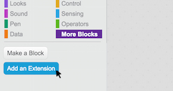

As extensões permitem que você se conecte a dispositivos físicos ou a serviços web.
Em qualquer projeto, clique na categoria Mais Blocos e escolha Adicionar uma extensão.

Se você tem o LEGO WeDo 2.0, veja a Configuração do LEGO WeDo 2.0.
Se você tem o LEGO WeDo 1.0 ou uma PicoBoard, veja as Configurações do LEGO WeDo 1.0 ou da Picoboard.